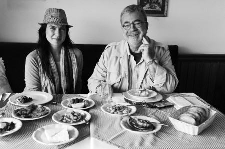

“İyi bir bal için hırsızlık bile yaparım”
Karadeniz şarkılarını sevdiğiniz kadar yemeklerini de seviyor musunuz?
Çok seviyorum. Güzel yaparlarsa hamsili pilava dayanamam. Konserler dolayısıyla Anadolu’nun farklı yerlerine gidiyoruz. En çok kahvaltı etmekte zorlanıyorum. Çünkü otellerdeki kutu reçeli, kutu tereyağını yiyemiyorum. Lüks tüketici değilim, gazete kâğıdının üzerine iki-üç lezzetli bir şey koysanız, lüks bir sofradan alabileceğim keyfin on katını alırım. Yemek anlayışı kafada bitiyor, sigarayı bırakmayı istemek gibi. Zihninizde ne yapmak istediğinize karar verdiğinizde, bedeniniz de bundan fazlasını istemiyor. Son dönemlerde yemek yemeyi azaltmak, tüketmeyi biraz hafifletmek, ihtiyacım olmayanı ve midemin boyutundan fazlasını tüketmemek gibi bir noktadayım aslında.
Bu kararınızın sebebi fiziğinizi korumak kaygısı mı yoksa felsefi mi?
Galiba daha çok felsefi bir kaygı. Çünkü şekilci biri değilim. Sağlıklı ve hafif olmayı seviyorum. İllaki 90-60-90 gibi ölçüm olsun diye bir kaygım hiç olmadı. Bu dünyada insanların ihtiyaçlarından fazlasını tükettiğini, açlığın sebeplerinden birinin bu olduğunu düşünüyorum. İnsanoğlu hem maddi hem manevi olarak doymak bilmeyen bir yaratık. Tam bir etobur olmama rağmen on yıl önce et ve tavuğu hayatımdan çıkardım; ama yumurtayı, sütü, peyniri ve yoğurdu çok seviyorum.
Neten et yemiyorsunuz?
Bu hayvanların üretim koşulları, tavukların artık tavuk olmaktan çıkması, eti yumuşak olsun diye küçücük buzağıların bacaklarının kırılması, kafeslere kapatılması... Yani benim karnım doysun ve lezzetli şeyler yiyeyim diye başka bir canlıya eziyet edilmesi fikrine tahammül edemiyorum. Kafasına vura vura öldürülen maymun, canlı canlı haşlanan ıstakoz, yengeç, dövüle dövüle yumuşatılan ahtapot yemiyorum. Etli patates yemeği, cacık eşliğinde bol kıymalı karnıyarık, sucuklu yumurta, pastırma... Bunlar benim gerçekten çok sevdiğim şeylerdi. Hâlâ kokusunu duyduğum zaman “Ne güzel koktu” derim, ama gerçekten artık içimden yemek gelmiyor.
İştahlı mı yoksa mızmız bir çocuktunuz?
Annemin söylediği kadarıyla sorunsuz bir çocukmuşum, genelde yemek ayırmazmışım. Lisedeyken çok zayıftım, bacaklarım çırpı gibiydi. Çok yerdim ama hiç kilo almazdım. O dönem annem çok yoğun çalışıyordu. Evde yemek olurdu, ama ben genelde abur cuburu ve tatlıyı tercih ederdim. Sabah okula giderken bir büyük ekmeğe beyazpeynir, kaşarpeyniri, domates, salatalık, zeytin ezmesi ile sandviç yaptırıp onu yerdim. Öğlene doğru okulda, dönerli yarım ekmek yerdim. Akşamüstüne doğru yine yarım ekmek arası karışık tost yerdim. Akşam eve giderken, bizim sokaktaki İpek Pastanesi’ne uğrayıp üstü jöleli tartlardan yerdim. Un kurabiyesini çok severdim. Levent’teki Tura Pastanesi’nde oturup, koca bir dilim çikolatalı frambuazlı veya çikolatalı vişneli pasta yerdim. Yatmadan önce de bir tane kepek ekmeğini dilimler ve bunları bir gün tereyağı, ahududu reçeli ve sütle; ertesi gün tereyağı, zeytin ezmesi ve sütle yerdim. Annem küçükken damak tadımın çok zevksiz olduğunu söylerdi.
Annenizin mutfağından aklınızda neler kaldı?
Maddi olanaklarımız çok yüksek değildi. Ama annem çok yaratıcı bir kadındı. Pazara akşam saatlerine gidip ucuz şeyler alırdı. O zamanlar herkesin bahçesinde meyve ağacı vardı. Dut, incir filan satın alınmazdı. Annem bahçe meyveleriyle çok güzel krep, kek yapardı. O zamanlar her şey doğaldı. Annemin eli çok lezzetlidir. Çok güzel domatesli pilav yapar mesela... Bu konuda ona çekmemişim. Ama yaratıcılık konusunda çekmiş olabilirim.
Mutfakla aranız nasıl?
Evliyken çok kötüydü. 19 yaşında evlendiğim için bir an ne yapacağımı şaşırdım. Çok iyi rakı sofrası kurarım ama... Tariflerle çok fazla bir şey yapmıyorum, ama elimde ne malzeme varsa ondan mutlaka bir şey uydurur, lezzetli bir şeyler ortaya çıkarırım. Yemekleri göz kararı yaparım.
“Asla yemem” dediğiniz bir şey var mı?
Hayatımda hiç salam, jambon ve sosis yemedim. Bunların tadını bilmiyorum. Görüntüsünden de midem bulanır. Sucuk ve pastırmayı çok severim. Hayatımdan çıkartmamış olsaydım, onları yerdim.
Tok da olsanız asla “hayır” diyemeyeceğiniz bir yemek var mı?
Fırından yeni çıkmış bir ekmek, ramazan pidesi, sıcak bir poğaça, ev kurabiyesi, ev pastası; bunları reddetmem imkânsız. Sıcak bir poğaçanın bende yarattığı haz duygusu o kadar yoğun ki anlatamam. Ispanaklı gülböreği, yanına süzme yoğurttan yapılmış açık ayrana asla “hayır” diyemem.
Çocukluğunuzdan bu yana yemek alışkanlıklarınızdan neler değişti?
Et ve tavuk yemediğimi söyledim. Sadece balık tüketiyorum. Önümüzdeki birkaç yıl içinde balık da hayatımdan çıkacak. Çünkü dünyadaki kaynaklar yavaş yavaş tükeniyor. Ağırlığı bakliyat, tahıl, meyve ve sebzeye vermeyi istiyorum artık. Biraz daha az toksin almayı istiyorum.
Bir günlük yemek maceranızı anlatır mısınız?
Annem de ben de bal tutkunuyuz. İyi bal bulduğumuz zaman hırsızlık bile yapabiliriz. Yaz sabahları süte iki tane tahıl barı koyuyorum, bal ekliyorum ve üzerine muz ya da şeftali doğruyorum. Bir süre sonra bardaktaki karışım pasta gibi oluyor, bunu yiyorum. Sabah kalkığım zaman sütlü kahve içiyorum. Öğlene doğru bir meyve yemek hoşuma gidiyor. Öğleden sonra karnım acıkıyor ev yemeği yemek istiyorum. Tarhana ve mercimek çorbasını çok seviyorum. Çorbanın yanında kızarmış kepek ekmeği, beyazpeynir yemeyi çok severim. Çorba bulamazsam nohut, mercimek, pilav üstü fasulye yerim. Akşamları çok fazla acıkmıyorum. Ne denk gelirse, ondan küçük bir porsiyon bana yeter. Akşam yemeğinden bir saat sonra da yine meyve yerim.
Yemek alışkanlıklarınızda sağlık kaygısı da var mı?
Sağlık kaygısı da var tabii ki. Evhamlı değilimdir, ama sağlığıma düşkünümdür. Beni halsiz düşüren bir şeyden çok rahatsız olurum. Bedenim bana o anda neye ihtiyacı olduğunu söylüyor. O da genelde bakliyat, meyve ya da sebze olur.

İçkiyle aranız nasıl?
30 yaşına kadar sağlam bir içiciydim, güzel de içerdim, ağırlıkla rakıcıyım. Genç yaşlarımda skor peşindeydik, kim daha fazla içiyor diye iddialaşırdık. Ama o da son dönemde içkiyi de dozunu kaçırmadan, tadını çıkararak içmeyi tercih ediyorum. Sofrada rakıcıyım, ama her sofranın farklı bir ruhu var.
Ne tür lokantaları tercih ediyorsunuz?
Ağırlıklı olarak Cihangir’deki Demeti’ye gidiyorum. Burası evimiz gibi oldu. Yemeğe düşkün olduğum dönemlerde salaş meyhaneleri çok severdim. Beykoz’a giderken denizin üstünde Kadirin Yeri vardı, orası benim en sevdiğim yerlerden bir tanesiydi. Bebek dünyanın en güzel sahil kasabalarından bir tanesiydi. Yeni Güneş Meyhanesi vardı, şimdi sosyetik bir restoran oldu. Bebek’e artık gitmek istemiyorum. Salaş meyhaneleri seviyorum. Akçaabat yolunun hemen başlangıcında Dedenin Yeri güzel bir yerdir.
Mutfak becerisi olan erkekler hoşunuza gider mi?
Erkeğin beceriklisi hoşuma gider. Özellikle aramam, ama lezzetli yemek yapan pratik erkekler caziptir. Ama yemekle olan ilişkim, benim seçeceğim insanda aradığım sebeplerden biri olmaktan çıktı artık. Şu an zaten aynı felsefeyi paylaştığım biri var hayatımda, o da vejetaryen.
Oğlunuz sizin yemeklerinizi seviyor mu?
Oğlum beni yemeğimi çok fazla yemedi. Babasıyla çok yakınız; onunla da kalıyor, benimle de. Bazen kendisi yapıyor, biz onun yemeğini yiyoruz. Sebze yemeği, makarna sosu, tatlı yapıyor. Tarık Emir’in bütün yetenekleri herhalde ellerinde toplanmış. Piyano çalması, resim yapması, gitar çalması, sihirbazlık yapması gibi...
(10 Ekim 2010)
| ŞEVVAL SAM’DAN YUMURTA TARİFİ Biraz kaymak tavada eritilir. Ardından yumurta kaymağın içine kırılır ve karıştırılır. Onun üzerine isteğe göre peynir, biraz maydanoz, biraz dereotu, fesleğen, pulbiber ve karabiber ilave edilebilir. |